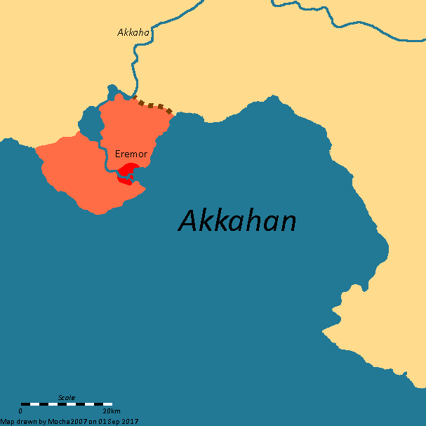
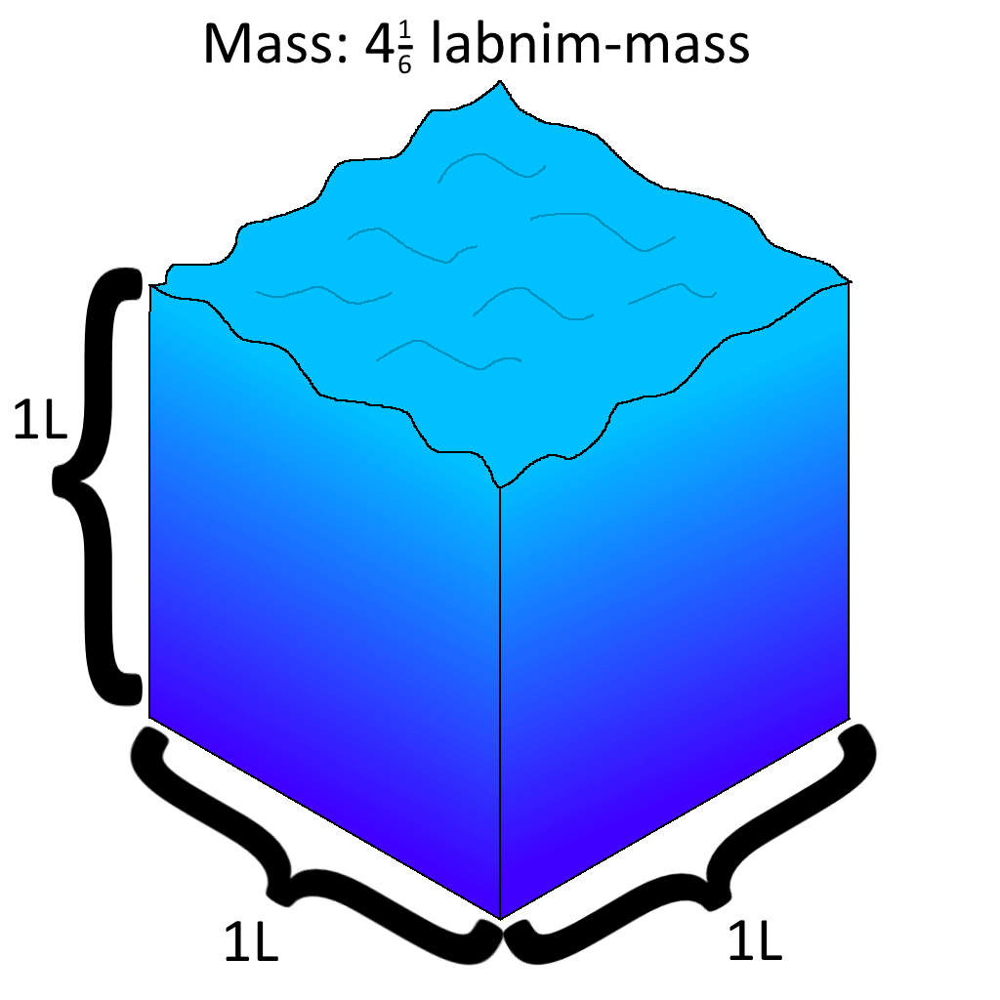
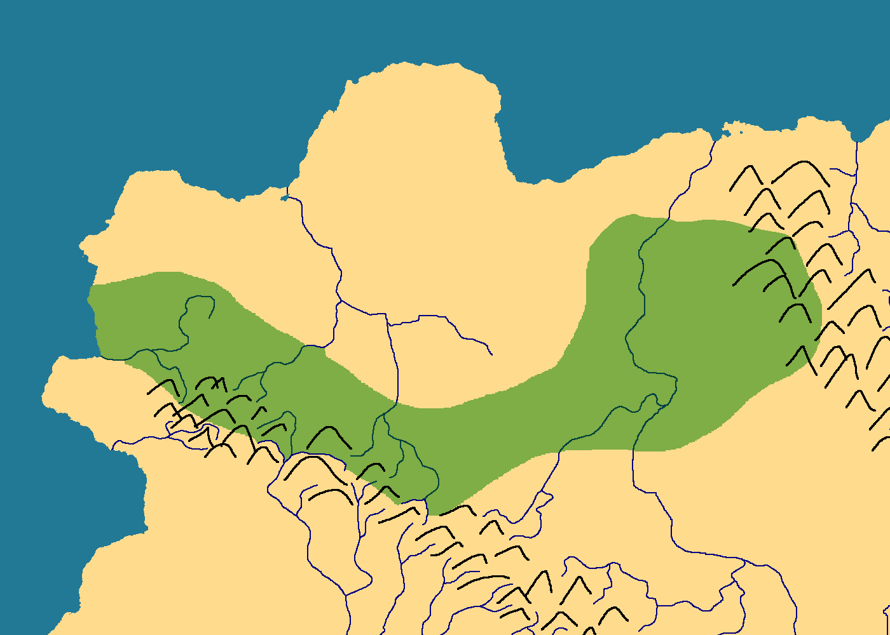

Eisen is a large gas giant, the fifth planet from Namei.
It is slightly more than nine times the mass of Jupiter, and thus it is the second-largest body in the system, comprising just over 1% the total mass.
It has many cloud bands, most of which alternate between dark khaki and olive,
except one band in the northern hemisphere, which is decidedly khaki.
There exist numerous temporary light-colored storms, but no permanent storms like our own Jupiter.
The planet has a faint ring system, only visible from Maia during an eclipse of Namei from Eisen.
Its rotation period is just over seven hours.
It has four major moons, one of which is an ice giant (Seter), and hundreds of minor moons, mostly captured asteroids in temporary orbits.
The four major moons, in order, are:
-
Uto, an extremely geologically active moon half the mass of Earth with an atmosphere similar too,
but somehow even hotter than Venus (Not by much - just 20K hotter).
Its orbital and rotation periods, by sheer coincidence, happen to be exactly 19 hours to the second.
-
Bolt, very similar to Uto, but two-thirds the mass of Earth and with a thinner atmosphere,
which leads to the temperature being only about 20 Celcius warmer than Earth.
Its orbital and rotation periods are both thirty-eight hours.
Both Bolt and Uto look almost exactly like Venus, but a bit darker (especially Bolt).
- Seter, an ice giant moon.
- Maia, which contains life.
The inner three major moons are in a 1:2:4 resonance, just like the Galileian moons.
Seter and Maia are additionally in a 5:3 resonance, meaning the whole system is in a 20:10:5:3 resonance.
No moons lie within the rings, but there are four small asteroid moons just outside the ring system.
Eremor

The Eremoran Knot, symbol of Eremor.
Eremor is the cradle of Pankairian civilization, and the capital of Eremora.
It contains 15,000 people.
Much of it sits on the mouth of the Akkaha, safe and secure on almost all sides.
Despite its enormous power the capital province itself is quite small - about one-third the area of Hong Kong.
The king's castle and administrative center is located on a large, heavily-fortified island (Victory Island) at its mouth.
Much of the remaining city is protected by the Great Wall of Eremor, which is just over ten kilometers long.
From Eremor, totality of solar eclipses can last longer then 14 minutes, causing the temperature to drop as much as 6K.

A surface map of Eremor bay (Also called Akkahan). Red - City Center.
Light Red - Capital territory. Dotted brown line - Great Wall of Eremor.
Written history began about ten thousand Nameian years ago, when a culture with an unknown name (Proto-Eremorans) first started constructing cities in the area.
These cities likely engaged in trade with each other and other neighboring cultures, including the Eremorans.
About nine millennia after the first written records, the Eremorans, a local culture, conquered Eremor, and soon after, much of the lower river basin.
Within a few centuries all of the Proto-Eremorans were assimilated into Eremoran culture, and all that remains of the mother culture is a handful of loans and myths.
The hydronyms Akkaha and Akkahan are widely believed to be such loans.
The city has a hot semi-arid climate (Köppen BSh), with three main seasons: summer, monsoon and winter.
The bay area itself receives much less precipitation during the monsoon than the areas east.
The city and surrounding province is located in plant hardiness zone 12a.
Due to the width of the Akkaha and significant seismic activity, there is no bridge to the smaller part of the city on the opposite bank (Other Bank district).
This side is mostly populated by fishers and farmers who use reed boats to cross the river.
These small boats are the property of the community and may be used by anyone.
Eremora

A map of Eremora and surrounding peoples.
Eremora is the kingdom controlled by Eremor.
It spans an area of roughly 30,000 km2 and contains about 750,000 people.
They speak Eremorôm (Eremoran).
Eremorans themselves call Eremor and Eremora Eremor, but here they are separated for clarity.

Zoom on Central Eremora.
The kingdom of Eremora is about 1000 years old.
The ethnonym 'Eremor' comes from the Eremoran for 'red people'.
This is in reference to the revolution which established the new kingdom.
There is a guild of sorts, of travellers, called the Enklár, sworn to protect each other.
In recent times, Inoran raiders have been threatening the positive relationship between Eremora and the Simur.
Perhaps it is time to hire some mercenaries to deal with this issue...?
The old royal house of Eremor is still extant, and all living members trace their lineage through Temêr's son Ker, and call themselves the Kesu.
Enatic descendants from Temêr's only childbearing daughter Easur are also extant, via her daughter Netar, forming the Enatic house Netasu.
Members of the house are thus also matrilineal descnendants of Siokar, queen consort of Temêr the Great.
Combined, many thousands claim membership.
When the new kingdom was established, there were 105 different ethnically-pre-eremoran "families" (houses).
The largest of these, House Kaba, comprised 726 individuals.
At the time, this was nearly one in twenty citizens.
Despite the repressive policies of Temêr II, by the end of his rule sixty-four years later, this number had only dropped to 101. House Kaba, still the largest, comprised 508 individuals.
These houses are significant (aside from their prestige) in that their members were given special legal rights, most notably the now-much-abused right to government proceedings done in their native language.
This was designed to protect speakers of Pre-Eremoran.
In all probability, however, the language was dead by 300 AT, and the law has since been used as a legal loophole for "grandfathered-in" members.
The census was postponed after the formation of the republic for a couple centuries until the Uskuisaurm reinstated it.
The census was replicated every century thereafter, with the following demographics on ethnic Pre-Eremorans:
| Year |
Total Houses |
Δ |
Largest House |
Members |
Δ |
% total |
Δ |
| (1 AT) |
105 |
- |
Kaba |
726 |
- |
~5% |
- |
| (64 AT) |
101 |
▼ |
Kaba |
508 |
▼ |
~5% |
- |
| 200 AT |
97 |
▼ |
Kaba |
132 |
▼ |
5.3% |
▲ |
| 300 AT |
93 |
▼ |
Kaba |
66 |
▼ |
5.3% |
- |
| 400 AT |
88 |
▼ |
Kaba |
68 |
▲ |
5.4% |
▲ |
| 500 AT |
81 |
▼ |
Losei |
75 |
▲ |
6.0% |
▲ |
| 600 AT |
78 |
▼ |
Losei |
82 |
▲ |
6.8% |
▲ |
| 700 AT |
75 |
▼ |
Losei |
75 |
▼ |
6.5% |
▼ |
| 800 AT |
68 |
▼ |
Losei |
76 |
▲ |
6.9% |
▲ |
| 900 AT |
68 |
- |
Losei |
86 |
▲ |
8.2% |
▲ |
| (est.) |
64 |
▼ |
Losei |
102 |
▲ |
10.2% |
▲ |
Note: Occasionally
Losei is rendered as
Gosei. The census treats these individuals as belonging to the same house.
Assuming a normal decay model, it would seem about 483 per mil of the houses die out or merge every year.
At that rate, it will take another 87 centuries until all but one of the houses have either died out or merged.
Eremoran and American coins, to scale.
Eremora uses 5 coins, each 4 times as valuable as the one prior.
The Aramat is worth about the same as a US Quarter.
The Stanuudot has been less and less used over time since it is significantly bulkier than the other coins, but it still remains in use.
- Aramat - Copper - (~$.25)
- Stanuelat - Small Tin - (~$1)
- Stanuudot - Large Tin - (~$4)
- Ardzintelat - Small Silver - (~$16)
- Ardzintudot - Large Silver - (~$64)

One cubic labnim-length of water weighs about four and one-sixth labnim-masses.
The basic Eremoran units of measurement are based on the size of their bricks (labnim).
The standard unit of mass (labnim) is approximately 1.188kg.
This word is also used for the basic unit of length, approximately 170.4mm, and volume, approximately 618.5mL.
One Eremoran brick weighs 1 labnim, has dimensions 1 by 1/2 by 1/4 labnim, and has a volume of 1 labnim.
The sarm is used for measuring the area of flooring a house possesses, and is equivalent to 50 square labnim, or about 1.452 m2.
The basic unit of time is the day, 28.93 Earth hours, which is subdivided into 10 'first divisions' (2.893h) of 10 'second divisions' (17.358min) of 10 'third divisions' (1.7358min).
Although this basic pattern continues to infinity, units smaller than third divisions are rarely used.
Other units include the afkaudom 'great journey', which was roughly how far a message could be run by messengers in one day,
or, alternatively, half the distance it can be sent by horse in a day, or 128 abakêu sesusesum, equivalent to about 562km,
the sesusesum 'hundred hundreds', equivalent to 2.904 ares,
and the abakêu sesusesum 'cartographer's ten-thousand', or abakêum for short,
equivalent to 4.390 km (One-ten-thousandth the circumference of Oneia).

Eremoran lengths compared to Imperial and Metric.
The afkaudom is used by the military to describe any significant distance, and by the general public to describe far distances.
The abakêum is used for milemarkers, but it is also used by cartographers and sailors for and long distance due to its easy computation from the circumference of Oneia.
For example, the distance between Eremor and Deftei as written on a milemarker would be 51 ass 100 ls
(206.1km - distances are marked every 50 abakêu labniu sesum.).
And the distance between Deftei and Inora as written on a milemarker would be 14 ass 50 ls (62.7km).
in this respect, the abakêu sesusesum and abakêu labniu sesum are used much like miles and chains.
Both the labniu sesum and labniu sesusesum, are used to describe distances within the same city or locale.
For example, the distance between two neighborhoods could be described as two labniu sesusesum, and a city block could be described as being ten labniu sesum long.
The labnim is used for the shortest measurements, such as the height of a person, which averages 10 l, or lane width, 20 l.
The labnim is divided into four parts, labniu edzam, or edzam for short, used in more precise measurements.
The edzam, the second-shortest named measurement, is thus 42.6mm.
The se, the shortest named measurement, is one-fifteenth of one edzam, and thus 2.84mm.
- 15 se in 1 edzam
- 4 edzam in 1 labnim
- 100 labnim in 1 labniu sesum
- 100 labnim sesum in 1 labniu sesusesum
- About 25,763 labnim in 1 abakêum
- ... or 25,000 abakêu labnim in 1 abakêum
- 128 abakêum in 1 afkaudom
Although speed is not a particularly important measurement in the era of Eremor, distance per time is usually given as abakêum per first division,
and 1 ass/d1 is about 1.518 km/h.
Angles are given as times; 360° is equal to 10 d1, or one day.
Falto

(The Falto system, to scale)
Falto is a tan tidally-locked hot Neptune orbiting Namei with a period of ten Earth days.
Its mass is a little under twice that of Neptune.
It has one major moon the size and appearance of Tethys, and five asteroid moons.
Kaznuk

Map of Kaznuk.
Kaznuk is an Oneian continent.

Map of Neko (west) and Miwa (east).
Neko and Miwa are islands northeast of Kaznuk.
Maia
Maia is a major moon of Eisen.
It is slightly more massive and slightly larger than Earth.
Its orbital and rotation periods are just over five and one-quarter Earth days.
Its surface pressure is a little over two and a half that of Earth's, and its surface temperature is 96K.
The atmospheric composition is roughly 59% H2, 39% N2, 1.6% CH4 (highly variable to region), and some trace noble gases and hydrocarbons.
Because of these conditions which are clearly ideal to life, it too contains intelligent civilizations.
From Maia, when Eisen is in its full phase, it appears four times brighter than the full moon.
Uto appears 32 times dimmer, Bolt 17 times, and Seter 3 times dimmer.
All major moons are visible during day, if they are above the horizon.
The minor moons are never brighter than Regulus, and thus can only be seen when neither Eisen nor Namei can be seen.
The four inner minor moons have a maximum apparent magnitude that of Procyon, the eigth-brightest star in the night sky, but can dive to ninth magnitude in suboptimal conditions.
Thus, they can all be easily seen for about half a local day.
For the near side, this is the two hours Maia is Eclipsed by Eisen during the eclipsing seasons.
For the far side, it is the half of the local day these are below the horizon.
Even in the worst positions, they are never dimmer than sixth magnitude, and thus are easily viewable when one is away from major cities.
It is occasionally eclipsed by the other three inferior major moons, especially Seter.
Seter can appear very large from Maia (up to eight times the diameter of how the moon appears to us!), but never larger than Eisen.
Since Eisen appears so bright when it is full, the entire moon is essentially in perpetual day for several hours.
Maians
Maians are the second-most advanced species of the unusually fortunate Namei system.
Their advancement is comparable to mid-19th century Earth.
They know of all the planets but Dicito and Mannu, the furthest out.
According to their top scientists, other bodies in the Namei system are unable to harbor life, due to their atmospheres containing an excess of the toxic molucules sulfur dioxide and molecular oxygen.
Some theorize exotic "water-based" life could exist on Oneia or its recently discovered moon, using hypothetical "lipids" instead of the normal acrylonitrile cell membranes all known life uses.
Of course, these so-called "lipids" not only do not occur naturally, but have also been failed to be synthesized in a laboratory!
Such "water-based" life would also have to deal with the damaging effects of using such a chemically reactive substance, a struggle methane-based life does not face.
Even if somehow such life could exist, it is unlikely to have developed metalworking due to the strong corrosive effects of water, damaging any tools made beyond repair.
Thus, even if intelligent water-based life existed, it could not develop the tools necessary to approach glorious Maian intelligence.
Namei
Namei is the star of the system.
Its spectral class is K5V, and the star is about 4 billion years old.
The planets Oneia and Eisen orbit this star, along with:
-
Ara is a khaki rocky planet with a mass more than six times that of Earth.
Its atmosphere and appearance are very similar to Venus.
It is tidally locked to Namei, with a period of four and a half Earth days.
Despite its extreme proximity to Namei, it has three asteroid moons, the largest being the size of Hyperion.
- Falto, a hot neptune twice the size of Neptune, with an appearance similar to Jupiter or Saturn.
-
The Inner Asteroid Belt, including Tata, a tan dwarf planet with similar size and appearance to our own moon.
It has two asteroid moons.
It is tidally locked, with a period of 21 earth days.
-
Bau, a tan planet with similar size to Mercury, but with the appearance of Venus, just without the heat.
Its rotation period is exactly two-thirds its orbital period of 36 days, meaning it's tidally locked. It has five asteroid moons.
The Pitang-Ra have claimed the first discovery of Formamide-based lifeforms on its surface, but others in the galaxy are more skeptical,
especially considering how they've been experimenting on the other aliens in the system, and ascribing numerous unusual properties to various worlds and creatures of the system.
- Oneia, an Earthlike world with a similarly habitable moon.
- The Outer Asteroid Belt
- Eisen, a massive gas giant similar in appearance to Jupiter.
-
Don, a planet just larger than Pluto; an extremely low-albedo (~0.02) sienna migrated Kuiper belt object.
It is tidally locked to its only moon, an object similar in size to Varda of our own solar system, with an orbital period of about fourty-three hours.
Unlike its parent, the moon has a normal albedo for objects of its kind (~0.1), making it likely captured.
Its razor-thin atmosphere comprises mostly nitrogen.
It has one spherical moon one twenty-fifth its mass.
-
Neuve, a light blue ice giant five-thirds the mass of Neptune.
It has eight major moons and fourteen asteroid moons.
The Pitang-Ra use its largest moon Neuve V as a platform for studying the Nameian civilizations.
This distance to the habitable worlds is necessary to avoid detection.
Despite the station's distance from Oneia, their ships' Alcubierre drives allow for travel in mere seconds.
Neuve V is similar in size and appearance to our own Oberon.
-
Dicito, a Mars-size migrated Kuiper belt object with an essentially identical appearance to Don.
It has six major moons, and eleven asteroid moons.
Seasonal rivers and seas of O2 flow on its surface under its thin atmosphere comprising mostly nitrogen.
It has six small spherical moons, in total contributing less than 1% of the mass to the Dicito system.
-
Mannu, a sea green gas giant with a mass two-thirds that of jupiter.
It has nine major moons, and dozens of asteroid moons.
The largest of these moons is three-halves the mass of Earth.
Its orbital period is 115 Earth years, the longest of any planet in the Namei system.
- The Kuiper belt, and beyond
All the planets inferior to Don have been known since antiquity to all Nameian civilizations.
Don has only recently been discovered by the Nikki and Maians; it is always dimmer than Neptune from Earth.
Neuve was known since antiquity for all civilizations; its maximum brightness is 23% higher than that of Uranus from Earth.
Dicito is only 85% brighter than Pluto at best, and was only just recently discovered by the Nikki.
Mannu is 28% dimmer than Neptune, and was also only just recently discovered by the Nikki. Both are unknown to other Nameian Civilizations.
Nikki
Nikki is a tidally locked moon of Oneia.
Like Oneia, Nikki is also inhabited.
Nikki is about 1/3 water by area.
The entire world is constrolled by the Nikki Empire.
The technology is roughly that of 1950s Earth.
Nikki Empire
The Nikki Empire has, in various, sometimes fractured forms, controlled Nikki for most of recorded history.
In the earliest recovered fragments of text, it seems they only stretched for a small fraction of the world.
A few hundred years after the recorded history, emperor Ntusint the Great conquered most of the remaining world, save for a few sparsely populated regions.
It was not until contemporary times the empire was able to extend its reach to these remotest of places.
The Empire is 800 Million people strong.
While the moon once spoke many languages, all of these have since been surplanted by the Nikki Language.
Oneia

The Oneia system, excluding small moonlets, to scale.
Oneia is a planet orbiting Namei.
It orbits 0.32 au away and has a period of 75 earth days, or just over 61 Oneian days.
Oneia has one major moon, Nikki, along with some minor moons and a planetary ring.
Solar Eclipses follow cycles similar to Earth, with the 1-month, 62-month, 311-month, and 684-month cycles being the most important.
684 local months is only 37 minutes longer than 11 local years.
Compare this to the Metonic cycle, which loses 4 hours, despite it being extremely close to perfect.
311 local months is only 2 hours, 21 minutes longer than 5 local years, and 62 local months is only 5 hours, 19 minutes shorter than 1 local year.
Eclipses each of these cycles tend to be very similar to the last.
Because of Nikki's inclination, there are specific seasons when eclipses can happen, convering about two-thirds of the orbit.
These seasons contain about 21 solar eclipses each.
Any particular location will have about four totality events in each of these eclipse seasons.
There are six major meteor showers throughout the year:
- 11th of Spring - Vernal Nwarbid Shower Peak
- 12th of Spring - Vernal Oikhurtid Shower Peak
- 3rd of Summer - Millenniids Shower Peak
- 9th of Summer - Aestive Oikhurtids Shower Peak
- 5th of Autumn - Autumnal Nwarbid Shower Peak
- 11th of Autumn - Na'unid Shower Peak
In Eremoran skyculture, there are thirty-two constellations. Twelve are of the Eremoran Zodiac:
- Winter - The Void
- Winter - The Drum
- Winter - The Bucket
- Spring - The Mice
- Spring - The Trowel
- Spring - The Ruler
- Summer - The Hawks
- Summer - The Candle
- Summer - The Road
- Fall - The Inkwell
- Fall - The Treaty
- Fall - The D4*
* - Eremorans have different words for dice depending on their shape. You could translate this as 'the Die', but there would be an identically-named constellation (a D6).

Pankair, Ora, and surrounding region.
The planet is quite visually similar to earth.
However, Oneia's surface is covered by a significantly higher fraction of land; over two-fifths of the surface is land.
The planet and moon are tidally locked, with a period of just under 29 earth hours.
Since the moon is tidally locked, there is no Oneian equivalent to the terran concept of a 'month'.
The planet is significantly warmer and wetter than Earth, thus snow and aridity is rare and restricted to the extremes.
The entire world is constrolled by various factions and races.
The technological development of the most advanced part of the planet is that of Earth's early iron age,
although it's not hard to find cultures still using bronze or stone tools.
The two continents containing iron-age civilizations are Pankair and Ora.
To Oneia, the appearance of the night side of Nikki is much like the night side of Earth.
To Oneians though, it just appears as if the moon shimmers in the dark, and since this is a relatively recent phenomenon,
there are few myths, and the great philosophers of the time argue over what causes the shimmering.
These theories range from the rational, great endless fires or noctilucent minerals, to the more paranormal, such as the spirits of the deceased.
Pitang-Ra
The Pitang-Ra are a race from outside the system, exploring and experimenting using even less care than one would consider possible.
They are well-despised throughout the galaxy for their perceived unethical methods.
They are recognized by the other spacefarers of the galaxy as the sole owner of the system.
Ora
A map of Ora.
Ora is a continent of Oneia, north of Pankair.
It covers 0.4% of the planet's surface.
It is home to the Orans, a civilization notable for the invasion of Pankair.
Not much else is known about them to the Pankair...
Pankair

A climatological map of Pankair.
The most advanced continent of Oneia, and one of the only two to have iron-age civilizations, is Pankair.
The continent is so large it convers nearly 1% of the entire planetary surface.
Its mountainous terrain was the perfect spot for small city-states to crop up, and in the past few centuries, large empires formed.
The oldest of these city-states is Eremor, an arid city at the mouth of a river.
Over the past few decades and continuing still is the Oran invasion of the continent.
The current state of the once-prosperous continent is now chaos and instability.
| Season |
Start Time (Local) |
Start Time (UTC) |
End Time (UTC) |
| 1 |
Autumn 2-9 |
20 Jul 2017 22:01 |
29 Jul 2017 11:26 |
| 2 |
Winter 9-15 |
18 Aug 2017 01:42 |
24 Aug 2017 05:35 |
| 3 |
" |
03 Oct 2017 15:37 |
12 Oct 2017 05:02 |
| 4 |
" |
31 Oct 2017 19:21 |
06 Nov 2017 23:10 |
| 5 |
" |
17 Dec 2017 09:13 |
25 Dec 2017 22:38 |
| 6 |
" |
14 Jan 2018 12:56 |
21 Jan 2018 22:03 |
| 7 |
" |
02 Mar 2018 02:49 |
11 Mar 2018 21:27 |
| 8 |
" |
30 Mar 2018 06:34 |
06 Apr 2018 15:42 |
| 9 |
" |
15 May 2018 20:25 |
25 May 2018 15:04 |
| 10 |
" |
13 Jun 2018 00:07 |
20 Jun 2018 09:18 |
| 11 |
" |
29 Jul 2018 14:04 |
08 Aug 2018 08:42 |
| 12 |
" |
26 Aug 2018 17:41 |
02 Sep 2018 02:51 |
| 13 |
" |
13 Oct 2018 12:52 |
22 Oct 2018 02:18 |
| 14 |
" |
10 Nov 2018 16:37 |
16 Nov 2018 20:25 |
| 15 |
" |
27 Dec 2018 06:29 |
04 Jan 2019 19:52 |
| ... |
| 25 |
" |
06 Jan 2020 03:44 |
14 Jan 2020 17:10 |
| 26 |
" |
03 Feb 2020 07:27 |
09 Feb 2020 11:17 |
Półtaś

A map of the major Półtaś settlements.
The Półtaś are a large group of city-states in northern Pankair sharing similar culture.
They all speak dialects of the Półtaś language.
They are an offshoot of a nomadic people inhabiting the central mountains.
In recent centuries they have expanded westward.
Porön
Porön is a region north of Półtaś where Porön is spoken.
It is bounded by two major rivers and the Półtaś realms.
They are a people said to be distantly related to the Półtaś.
Seter